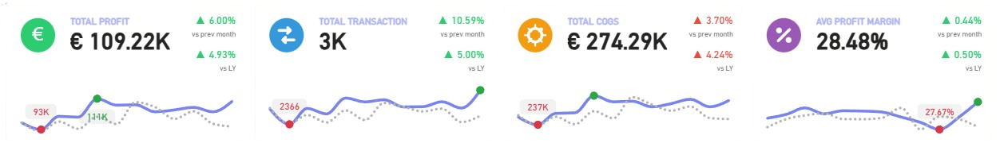
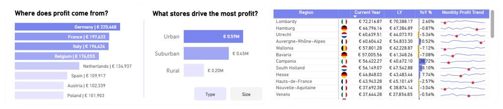
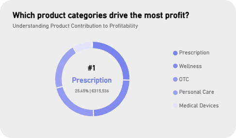
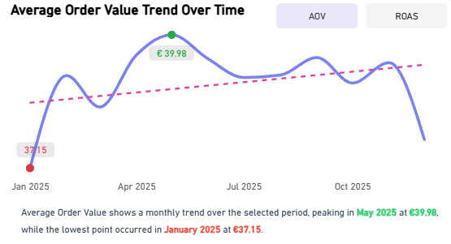

Analyzes global pharmacy sales, customer trends, and operational
performance for data-driven decision making.
Overview
This multi-page business intelligence dashboard delivers a 360° view of pharmacy performance across Europe, spanning profit trends, regional sales, product mix, and store-level execution. Built for HealthPoint Pharmacy, it transforms raw transactional data into executive-ready insights across three analytical layers: Overview, Pharmacy Performance, and Product Analysis. The dashboard empowers leadership to identify where profit is being made, where it is being lost, and what levers to pull for growth.

Business Question
Pharmacy chains operating across multiple countries and store formats face a common challenge: fragmented visibility into what drives profitability. Without a consolidated view, leadership cannot quickly pinpoint which regions, product categories, store types, or brands are underperforming — making it difficult to allocate marketing spend, optimize inventory, or prioritize high-margin growth opportunities. This dashboard directly addresses that gap by unifying performance data into a single, decision-ready platform.
Key Insights & Features
- Core KPIs Tracked
-
Total Profit (€109.22K), Total Transactions (3K), Total Cost of Goods (€274.29K), and Average Profit Margin (28.48%) — each benchmarked against prior month and last year for instant trend context.
- Regional & Country Breakdown
-
Profit contribution ranked by country (Germany leading at €221K), with a drill-down into regions such as Lombardy, Hamburg, and Auvergne-Rhône-Alpes, enabling precise geographic targeting.
- Product & Brand Intelligence
-
Category-level profit rankings (Prescription #1 at 25.45%), brand-level comparisons (AntiBioX, ImmunoPlus, BioBalance), and a Four Quadrants Growth Model identifying high-margin, high-volume products across a 185-product portfolio.
- Store Performance Heatmap
-
Cross-tabulated by country, store type (Urban, Suburban, Rural), and average order value — revealing execution gaps and pricing inconsistencies at the store level.
- Average Order Value & ROAS Trend Analysis
-
Monthly AOV trend (peaking May 2025 at €39.98) plotted alongside Return on Ad Spend to evaluate marketing efficiency over time.
- Profit Distribution by Country & Channel
-
Stacked bar visualizations breaking down Rural vs. Suburban vs. Urban profit share per country, supporting channel strategy decisions with quantified evidence.
| Tool | Usage |
|---|---|
| Power BI | Dashboard design, report pages, interactivity |
| DAX | KPI calculations, YoY/MoM comparisons, margin metrics |
| Power Query (M) | Data transformation and modeling |
| Excel | Source data preparation |
| Data Modeling | Star schema with fact and dimension tables |
Impact & Value
This dashboard reduces the time to insight from days to seconds — enabling pharmacy executives and regional managers to make faster, evidence-backed decisions on pricing, product assortment, and marketing investment. By surfacing underperforming regions and high-growth product opportunities in a single view, the dashboard directly supports margin improvement and strategic resource allocation. The self-service design empowers non-technical stakeholders to explore data independently, reducing reliance on ad hoc analyst requests and fostering a data-driven culture across the organization.